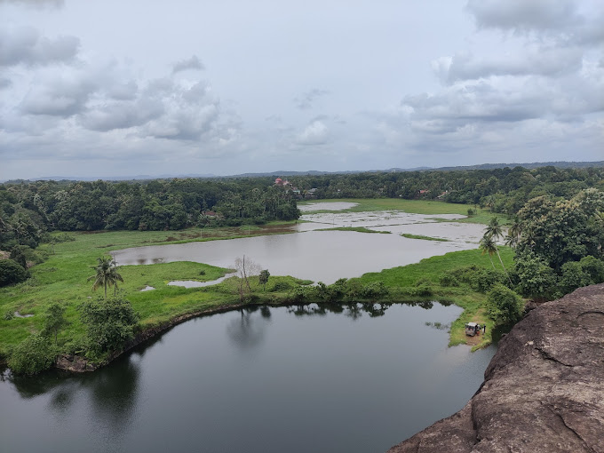

Chengannur (also spelled Chengannoor) is a Town and municipality in Alappuzha district, Kerala, India. It is also the headquarters of the Chengannur Taluk. Chengannur is located in the south-eastern part of the district, in the region known as Odanad, along the banks of Pamba River.Chengannur is 36 kilometres (22 mi) southeast of the district headquarters Alappuzha and 117 kilometres (73 mi) north of the state capital Thiruvananthapuram. Both the NH 183 and Main Central Road (State Highway 1) pass through the town. Chengannur is noted for the Chengannur Mahadeva Temple and the Old Syrian Church of the ancient St. Thomas Christians community. It is also a major point for pilgrims to the Sabarimala Temple, and thus has been described as "The Gateway to Sabarimala".
Location:Kallisseri Eraviperoor Road, Othera, Kerala 689551
Location: By Pass Road, Chengannur, Kerala 689121